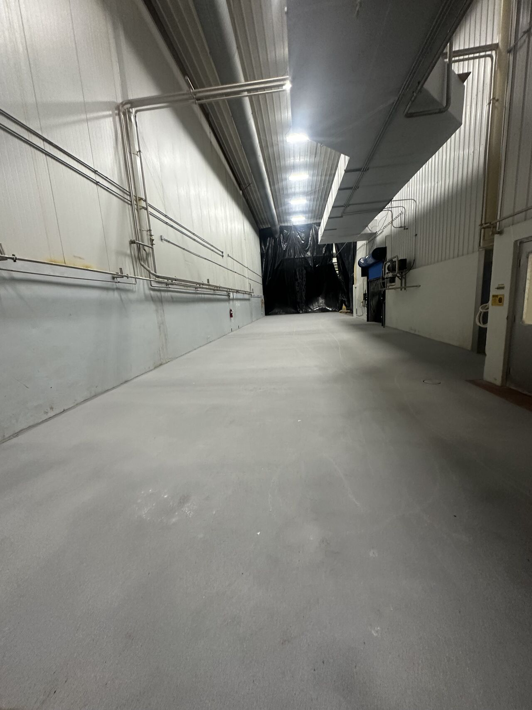
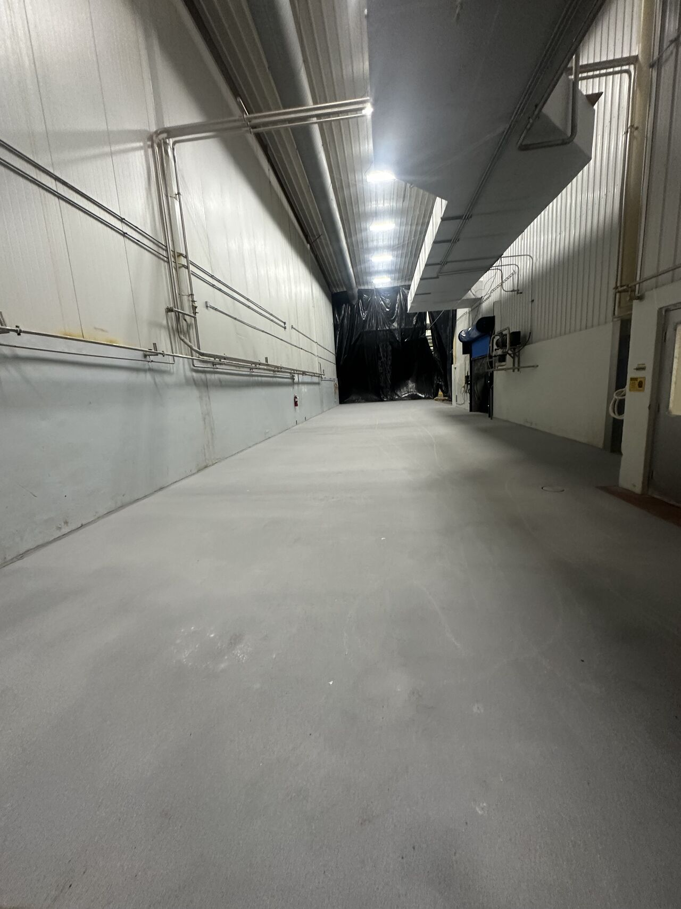

One of the most common questions we get: "Should we go red or gray?" Both are SaniCrete STX 3/8" cementitious urethane. Both are seamless, durable, and USDA compliant. The performance is identical — the difference is purely visual. But that visual choice matters more than you might think.
 

The Case for Red
Red is the most popular choice in food processing, and there's a practical reason why. In environments with harsh washdown chemicals, rust staining, and organic residue, a red floor hides discoloration better than gray. When your floor starts to show the inevitable wear from years of aggressive sanitation, the red tone blends in rather than standing out.
- Hides chemical discoloration — rust and orange staining blends into the red tone
- Industry standard — red is what most food processors expect to see
- High visibility — spills, debris, and contaminants are easy to spot on a red floor
- Pairs well with zone markings — yellow and white line striping pops against red
The Case for Gray
Gray gives a clean, modern look that works well in environments where chemical exposure is lighter or where the facility wants a brighter appearance. Gray floors make rooms feel larger and reflect more light, which can be an advantage in dimly lit spaces.
- Clean, bright appearance — reflects light and opens up the space
- Shows cleanliness — easier to see that the floor has been properly cleaned
- Modern aesthetic — popular in newer facilities and showpiece production areas
- Versatile — works well in hallways, cold storage, and utility areas
Our Recommendation
For most food processing production floors — especially meat and poultry, seafood, and heavy washdown environments — we recommend red. For cold storage, hallways, utility rooms, and lighter-duty areas, gray is a great choice.
Either way, you're getting the same SaniCrete STX system: 3/8" stainless steel reinforced cementitious urethane that handles thermal shock, chemical exposure, heavy traffic, and aggressive washdowns. The color is your call.